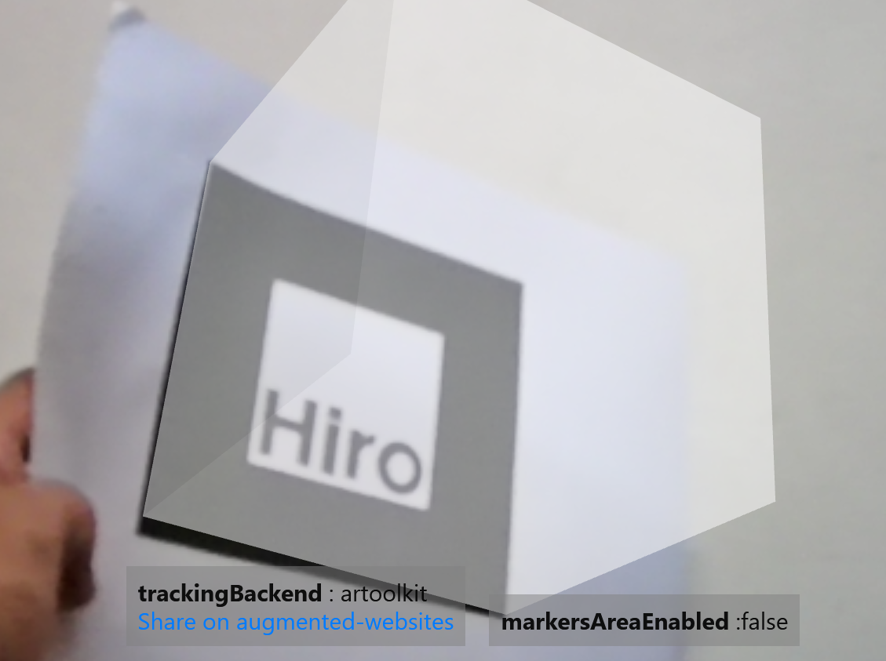

Augmented Reality
The Future
What is augmented reality ?
Augmented reality (AR) is an interactive experience of a real-world environment where the objects that reside in the real world are enhanced by computer-generated perceptual information.
Simply put, it means that the real-world environment as seen by the computers is modified to provide some information, or simply enhance user satisfaction.
Ever wondered how does it feel like ?
The world around you, just completely different...
Follow the below steps to experience AR from within your browser.
Built with the power of AR.js by Jérôme Etienne
Step 1:
Download the marker from
here (pdf file).
Step 2:
Go to
this page and allow permissions for camera.
Step 3:
Take a print-out of the marker (the pdf file) and hold it in front of the camera.

You should be able to see a cube on top of that marker on your screen as in the image.
Go ahead! Try to rotate it. The cube should rotate as well. This was just a glimpse of what Augmented Reality can do!
Augmented Reality in education
Augmented reality has a number of applications, and a prominent one is education. Using augmented reality in the classroom can turn an ordinary class into an engaging experience. AR technology provides virtual examples and adds gaming elements to support textbook materials. As a result, classes become more interactive. AR helps students better remember the information they’ve just learned.
What all can AR do for education ?
AR can be and has been sucessfully implemented for the following:
- Paleontology: Example - Dinasour 4D+
- Chemistry: Example - Elements 4D
- History and Science: Example - Google Expeditions
- Medical Education and training: Example - Human Anatomy Atlas
- Space education: Example - Project Sidekick
- Military training: Example - Augmented Immersive Team Trainer (AITT)